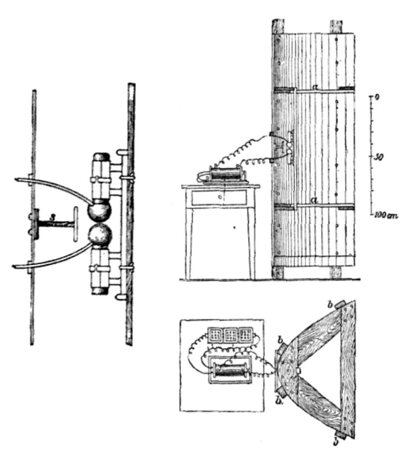

第 1 章
赫兹的涟漪
卡尔斯鲁厄理工学院的一间暗室里，两个铜球之间跳着蓝色火花。海因里希·赫兹要确认一件事：几米外另一个铜环的间隙里，会不会有更微弱的火花应和。这束火花太细，白天会被日光吞掉，所以他让房

间暗下来。
麦克斯韦已经在方程里写下过推断：变化的电场会推开变化的磁场，变化的磁场又推开变化的电场，一层一层向外扩张，形成电磁波。赫兹要抓的正是它。
发射端是一只感应线圈，连着两个铜球，给它们充电直到空气被击穿，火花蹦跳。接收端是一根弯成环的铜线，两端留着微小的间隙。没有导线相连，没有可见的媒介。
发射端的火花一跳，接收端的间隙里也跟着出现针尖大小的蓝点。这实验看起来像魔术。
但赫兹接下来做的事更接近会计。他系统测量波长、反射、折射、偏振。一块锌板插在发射端和接收端之间，接收端的火花熄灭；锌板移开，火花回来。让波通过沥青棱镜，它会转弯，证明它和光服从同一条折射定律。
赫兹的结论清楚：电磁波以光速传播，能被金属反射，能被介质折射，它和可见光的区别只在波长。
麦克斯韦是对的。然后他转向阴极射线。这种转身在当时物理学界不算异常。
证实麦克斯韦方程已经足够重要。用电磁波探测远处的金属物体，物理上并非不可能，但没有人觉得它值得认真对待。赫兹对应用问题的回应冷淡，大意是波长太长，做不了精细的事。他没有说错。那时实验室里的电磁波波长以米计，确实不适合任何已知行业。
更深的问题不在波长。十九世纪末的世界没有为“看不见的探测”留位置。航运靠瞭望员、雾号和航标灯，海军靠目视侦察和信号旗，气象靠气压计和风筝。这些行业不觉得缺了什么。既然不缺，就不会有人为一个“无用的发现”掏钱。
1894年，一个二十岁的意大利青年读到赫兹的论文，看到的是另一面。古列尔莫·马可尼没有受过系统科学训练，他的才能在于把物理现象变成可以出售的装置。他在自家阁楼架设天线，改进火花隙发射机，增加接地，把通信距离从几米推到几百米、几公里、几十公里。1899年，他的信号跨过英吉利海峡。1901年，他宣布收到跨大西洋信号。
后来的技术分析怀疑在当时的条件下这几乎不可能，但已经无人在意。无线电成了科技奇迹。马可尼对市场更敏感。他读赫兹论文后看到的是距离和通信的焦虑。船东想让船与岸保持联络，海军想在舰队之间传递命令，报业想抢新闻。这些需求催生了资金、人才和制度。船公司开始装设备，海军开始列装，港口开始设站。无线电员成为船员编制的一部分，保险业也开始考虑无线电对海上救援的价值。
通信的装置中，接收端只管收，不管信号路上碰到了什么。要把无线电从通信变成探测，需要一次思想跳跃：主动发射一束电磁波，等它撞上金属物体弹回来，再从回波里读出方位。这个跳跃在物理上毫无障碍——赫兹已经证明金属会反射电磁波。但在制度上，它无家可归。
然后，一个德国工程师在1904年把跳跃变成了专利。克里斯蒂安·许尔斯迈尔，杜塞尔多夫工程师。1904年4月30日，他取得德国专利165546，名称“遥测镜”。
专利文件里有一幅原理草图：发射机发出一束电磁波，遇到金属物体后反射回来，接收机捕捉回波，操作者据此判断障碍物的方位和距离。草图上的逻辑很清楚，发出去的一束波被目标截住，再原路折返。它不要求读出语音或文字，只要求读出有没有回波、从哪个方向来、延迟多久。发射、接收、反射定位，雷达的基本功能在这页纸里已经齐全。
许尔斯迈尔选择了一个公共的制高点做演示：科隆大教堂。从尖顶望下去，莱茵河上的船只是一条条移动的金属轮廓。这不是秘密军事试验，而是一次公开技术展示。他需要订单，需要资金，需要一个组织来接纳发明。科隆大教堂提供了最显眼的舞台。
架设之后，发射机对准莱茵河，接收端捕捉从船体回来的信号。在几次试验中，他声称探测到了几公里外的金属船只。他什么也没等到。
航运公司的反应冷淡得近乎漠然。在他们看来，碰撞预警是一个已经解决的问题。瞭望员、雾号、航标灯、减速航行，这套体系运行几十年，没有被事故率逼出重大变革。用电磁波探测障碍物，听起来像科幻小说。
装置昂贵，操作复杂，维护困难，而且谁也没法保证它在北大西洋暴风雨里能稳定工作。科隆大教堂尖顶上的成功，不等于真实海况下的可靠。
更关键的是制度惯性。二十世纪初的航运业没有把碰撞预警视为需要电子解决方案的问题。船东的账本上，碰撞造成的损失由保险覆盖，购置电子装置则是新的资本支出，两者不直接冲销。海上保险公司的条款把碰撞损失视为特定风险，费率按历史事故率计算。引入电子探测装置不会自动降低保费，因为保险商也还不信任它。船长和引航员信任经验和肉眼，不信任仪表盘上的指针。航海安全体系以人眼为第一层，雾号为第二层，减速为第三层。这个体系没有被击穿，所以不会主动引入电子探测。
遥测镜找不到切入点。海军的反应更值得玩味。德国海军当时正在快速扩张，按常理，任何能增强舰艇态势感知的技术都应该受重视。但实际接触中，海军官员表现出的是礼貌的冷淡。目视侦察是海军战术的基础，瞭望哨、信号旗、探照灯构成舰队信息网络。
插入一台电子探测装置，意味着改变既有指挥流程、人员编制和战术条令。参谋部门评估新技术时，看的是它能否纳入舰队战术动作。遥测镜提供障碍物方位，但舰队决策要求敌我识别、航向、航速和距离。单靠回波，指挥链路无法行动。德国海军的扩军资金流向战列舰、巡洋舰、火炮和装甲，电子设备在预算优先级里排不上号。没人愿意为了一个未经实战检验的发明去动这些。更何况，1904年的海军还没经历过那种让“看不见”变成恐惧的威胁。潜艇尚未成为主要威胁，飞机还在车间的门槛上，夜间鱼雷艇攻击只是理论。在这个威胁环境里，电磁波探测像一个寻找问题的答案。
许尔斯迈尔没有放弃。他在1904年到1906年间向欧洲多个国家申请专利，包括英国、法国和美国。专利提供保护，不提供市场。它只证明技术可以申报，不证明有任何组织会采购。他改进设计，试图让装置更紧凑、更可靠。他写信给航运公司、港口管理局和海军部门，措辞一次比一次恳切。
1906年，他在鹿特丹港组织更大规模的公开演示，地点选在欧洲最繁忙的航道之一。装置技术上又一次成功，数据记录清晰。但商业和军事上的反应依然沉默。
没有人说不，因为说不需要理由；也没有人说好，因为说好意味着要掏钱、要改变、要承担风险。沉默最省事。档案里没有留下造船厂的回函。如果它们留下过什么，更可能是一行简短的婉拒，而不是长篇技术评估。拒绝不需要解释，所以这类文件通常不会进入历史记录。
许尔斯迈尔本人此后不再公开推进这项发明，留下来的记录也就断了。专利年费一栏，后来停止了更新。1904年的原理草图被收进档案，等待一个没有到来的买家。
这段历史容易被讲成“超前发明的悲剧”：一个天才看到别人没看到的东西，被短视时代埋没。这个叙事漏掉最重要的部分。装置原理正确，演示成功。许尔斯迈尔个人推广也足够尽力。
失败发生在另一个层面：制度空白。一项技术要存活，取决于当时是否存在一个能够吸收它的组织母体。
这个母体需要明确的需求、可调动的资源、把新技术嵌入现有流程的意愿。二十世纪初的航运业和海军都不具备这些条件。需求被既有手段满足，资源被既有方案占用，流程被既有惯例固化。遥测镜不是被拒绝，而是被无视。拒绝需要理由，无视只需要惯性。
这个模式后来反复出现：技术乘制度。雷达的物理原理在1886年被赫兹探明，探测方案在1904年被许尔斯迈尔实现。但从实验室到战场，中间隔着的不是技术鸿沟，而是制度真空。许尔斯迈尔的遥测镜没有失败，它只是等错了时代。
一个细节暴露出问题所在。许尔斯迈尔专利文件把装置用途描述为“探测金属物体”，没有特指船只、军舰或障碍物。这个宽泛的表述说明他自己也不太确定这项技术会落在哪里。航运、港口、海军、气象，他试过所有方向，没有一方回应。一项技术不知道自己的用户是谁，这不是技术的错，而是时代的局限。
马可尼的对照就在这里。马可尼的成功不在于他的火花隙发射机更先进。原理上火花隙相当粗糙。
在科隆大教堂的尖顶之间，许尔斯迈尔架设的装置看上去更像一套物理教学仪器，而不是未来战争的预演。发射机是一只改装过的火花隙振荡器，连接着一面抛物面锌板反射器，把电磁波聚成一束，指向莱茵河。接收机是另一面类似的反射器，朝向同一方向，等待回波。操作者需要交替观察发射火花和接收端的检波指示——当时还没有电子放大器，回波信号微弱到需要遮光才能辨认。教堂的钟声每隔一刻钟敲响一次，每次敲钟都会让接收端的指针颤动几秒。
许尔斯迈尔在演示记录里特别注明，需要避开整点报时，否则数据会乱。这个细节后来被大多数技术史忽略，但它恰好暴露了当时装置的脆弱性：它不是在消声室里运行的精密仪器，而是在一个充满振动、杂波和偶然干扰的公共空间里勉强工作的原型机。
专利文件中的原理草图标注清晰，但清晰掩盖了大量工程难题。发射机和接收机之间的隔离是草图没有解决的问题。发射脉冲的强度足以让几米外的接收机直接饱和，而回波信号只有发射信号的百万分之一。
许尔斯迈尔的解决方案是物理距离：把发射机和接收机分别架在教堂的两个尖顶平台上，中间隔开几十米，利用建筑结构本身屏蔽直射波。这个方案在科隆大教堂可行，因为教堂的建筑体量恰好提供了现成的隔离。但任何一艘船都没有这样的空间冗余。船上的发射天线和接收天线必须挤在同一个上层建筑里，间距不超过几米。直射波会把回波完全淹没。
许尔斯迈尔知道这一点。他在专利补充说明里提出过脉冲方案：发射机短暂发射一个脉冲，然后立即关闭，接收机在发射间隙捕捉回波。这个方案在原理上接近后来的脉冲雷达，但他的火花隙发射机做不到精确的脉冲控制。火花一旦被击穿，振荡会持续衰减几十个周期，不是一个干净的单脉冲，而是一串拖尾。
发射机关闭后，残余振荡还会在电路中拖曳几微秒，这几微秒里，近距离目标——比如几百米内的另一艘船——的回波已经被错过了。最小探测距离因而被限制在数公里之外，这对航运碰撞预警来说几乎无用。船只在港口和狭窄航道里的碰撞风险恰恰发生在几百米到一两公里的距离上，而不是数公里外。许尔斯迈尔的装置能探测到远方的船，却探测不到近在咫尺的危险。
这个技术局限在当时的物理知识框架内是可以理解的。火花隙发射机是那个时代唯一能产生微波段电磁波的装置，马可尼用它做通信已经足够，因为通信只要求信号到达，不要求精确的时间控制。探测却要求发射和接收之间的时序关系精确到微秒量级。火花隙的物理特性——随机击穿电压、拖尾振荡、频谱不纯——决定了它天然不适合做探测。
要解决这个问题，需要一种能产生稳定脉冲的微波源。这种源要到三十年后才出现：磁控管。许尔斯迈尔不可能知道磁控管，但他理解自己装置的局限。他在1905年的一封信中写道，需要一种“更干净的振荡”，但没有指明方向。这不是他个人的技术盲区，而是整个时代的物理工程能力还没有抵达那个临界点。
航运公司的拒绝因此不只是制度惯性，也有技术理性的成分。装置在科隆大教堂的静态演示中成功，并不等于在真实海况下可靠。在北大西洋的暴风雨里，船体横摇可以达到二十度以上，发射波束会跟着船体扫过天空和海面，回波信号在接收端变成间歇性的闪烁，操作员无法区分是目标移动还是船体摇晃。雨雪和海浪也会产生杂波，当时的接收机没有滤波能力，任何电磁扰动都会在检波器上产生反应。操作员面对的不是清晰的回波信号，而是一片噪声，他需要从噪声里判断哪个跳动是船，哪个跳动是浪。
这项判断需要训练，而训练需要制度支撑。航运公司没有无线电员之外的电子技术人员编制，船长没有义务理解电磁波反射原理。装置要上船，意味着要在船上增加一个岗位，这个岗位要有人培训、有人管理、有人承担责任。在1904年，没有任何一家航运公司的人力资源部门愿意为这个岗位设计编制和薪酬。
保险公司的逻辑更冷。海上保险的费率结构建立在精算表上，精算表基于历史事故数据。碰撞损失在数据里是一个稳定的概率项，不会因为某艘船单独装了电子装置就改变整个船队的费率。要改变费率，需要全行业的数据积累，证明装置有效降低了事故率。但装置要积累数据，就需要先装船使用；要装船使用，就需要费率降低来抵消成本。这是一个死循环。许尔斯迈尔面对的对手不是某个具体的人，而是一个自我维持的系统。这个系统没有外部冲击时，不会主动打破自己的平衡。
德国海军档案里没有留下对许尔斯迈尔演示的正式评估报告，但留下了周边线索。1904年秋天，帝国海军技术委员会在基尔审查了一批发明提案，许尔斯迈尔的专利被列入“通信与探测”分类。这个分类本身就有问题——它把通信和探测混在一起，意味着审查者没有把探测视为独立的技术门类。审查记录显示，委员会对遥测镜的评估在两句话里完成：一句肯定其物理原理“与赫兹实验一致”，一句指出“在现有舰艇编队中尚无明确战术用途”。两句话之间没有技术论证，没有试验建议，没有保留意见。
不是委员会草率，而是他们找不到将遥测镜纳入战术体系的路径。舰队作战依赖的是战列线编队，舰艇之间保持固定间距，靠目视信号协调机动。探测对方舰艇的任务由前出侦察舰承担，侦察舰靠目视确认敌舰位置，然后通过无线电或信号旗回报。这个流程里没有给电磁波探测留出位置，因为电磁波探测不能区分敌我，不能判断舰型，不能提供足够信息让指挥官做出战术决策。
委员会要的不是一个能探测金属物体的装置，而是一个能整合进现有指挥体系的传感器。许尔斯迈尔提供的是前者，后者需要的是一整套配套系统：敌我识别、目标分类、航迹推算、战术显控。这些配套系统要等到三十年后才逐步建立。
许尔斯迈尔在1906年鹿特丹港的公开演示是他最后一次大规模努力。他选择鹿特丹，是因为那里的港口管理局对新技术的态度比德国同行稍开放，也因为鹿特丹的航道繁忙，船只密集，演示效果更好。这一次他把装置架在港口入口处的岸上，而不是教堂尖顶。
他成功在于找到一个现成需求缺口：远距离通信。航运公司需要，报纸需要，海军也需要。需求催生资金、人才和制度聚集，无线电产业由此诞生。许尔斯迈尔的遥测镜没有找到这个缺口，所以它只能停在专利文件里。这不是一个“如果”的故事。如果航运公司有远见，如果海军更开明，历史会怎样改写，这种假设没有意义。
二十世纪初的制度环境不可能做出不同选择。制度不是由个人远见决定的，而是由既有的利益格局、风险偏好和组织逻辑决定的。在那个格局里，遥测镜没有位置。后人有时把雷达战的胜负归结为磁控管、厘米波、天线增益这些硬指标。这套叙述有它的说服力，因为1940年后的战局确实跟着波长在变。
但许尔斯迈尔的专利提醒，在硬指标登场之前，制度已经作出了第一轮选择。技术优势要变成作战效能，依赖组织愿不愿意为它改变指挥链。许尔斯迈尔没有拿到这个机会。哪怕装置再稳定一些，1904年也没有一条指挥链愿意为它留出接口。这个缺口后来有了名字：锋线整合。
把技术嵌进组织与制度的速度，经常超过技术本身。但物理原理不会因为被无视就消失。电磁波会在遇到金属物体时反射，反射信号携带距离和方位的信息。这些物理事实安静地躺在那里，等待一个能激活它们的条件：一场足够大的战争制造出足够大的需求缺口，一个足够有力的机构愿意为“看不见的探测”下注。许尔斯迈尔把专利锁进抽屉时，这个条件还没有到来。
科隆大教堂尖顶上的蓝色火花熄灭了，莱茵河上的船只继续靠肉眼航行，海军继续用目视侦察丈量海平线。世界没有感到缺了什么。
但缺了的东西已经在那里。赫兹的铜球证明电磁波存在，许尔斯迈尔的遥测镜证明电磁波可以探测金属物体。从物理原理到工程样机，这条路已经走通。剩下的问题不是技术问题，是怎么让世界需要它。这个问题比任何人想的都难。因为它要等的不是下一个发明家，而是下一场战争。